Lesson 2: Visual Attention and Eye Tracking
HCI Workshop
Lesson Roadmap
- Section 2.1: Visual Attention: eye anatomy, foveal sampling, eye movements, and attention guidance
- Section 2.2: Eye Tracking: trackers, AOIs, gaze visualization, and gaze phenomena
- Section 2.3: Eye-tracking Case Studies: applied traffic-control and VR-driving examples
Section 2.1: Visual Attention
- Parts of the eye
- Foveal sampling
- Eye movements
- Bottom-up and top-down attention
Parts of the Eye
- Cornea - clear surface that protects the eye and helps focus light
- Pupil - dark opening that lets light enter the eye
- Iris - colored ring around the pupil
- Lens - focuses light onto the retina
- Retina - light-sensitive surface at the back of the eye
- Fovea - small region used for high-detail vision
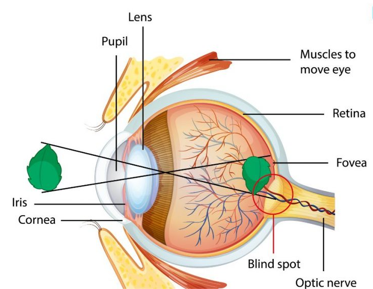
Rods, Cones, and Foveal Vision
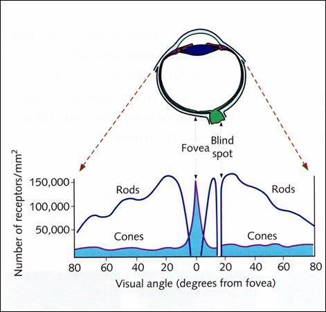
- Cones - color and fine detail
- Rods - motion and low-light sensitivity
- Fovea - narrow zone of sharp vision
- Implication - eyes move to inspect detail
High-Level Terminology
- Gaze - where the eyes are directed
- Attention - selected information for processing
- Gaze and attention often overlap
- Gaze does not prove comprehension or intent
- In task work, people often look where useful information is expected
Source: Land and Tatler, Looking and Acting: Vision and Eye Movements in Natural Behaviour, Oxford University Press, 2009, Chs. 1 and 3.
Foveal Sampling
- High-detail vision is concentrated near the fovea
- Peripheral vision supports context, motion, and rough location
- Small labels, values, and controls usually require fixation
- Visual displays should make important information easy to sample
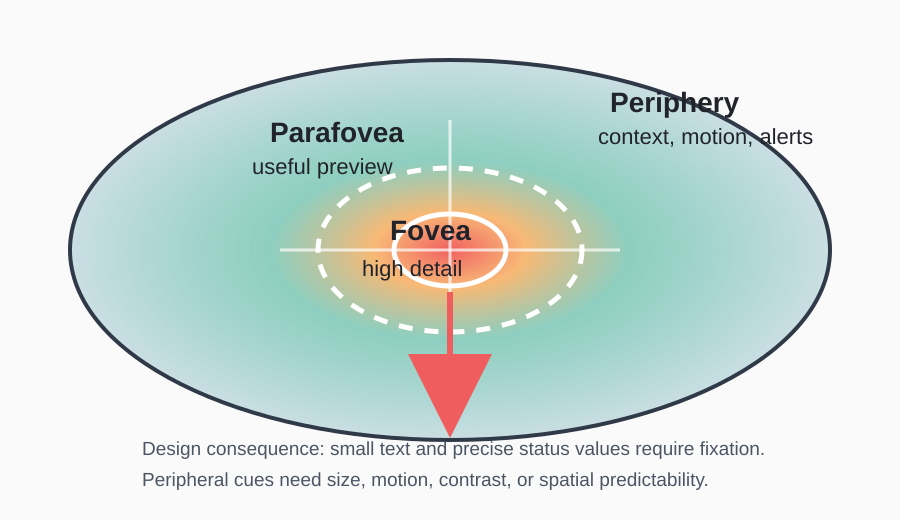
Source: Land and Tatler, Looking and Acting: Vision and Eye Movements in Natural Behaviour, Oxford University Press, 2009, Ch. 2.
Eye Movement Types
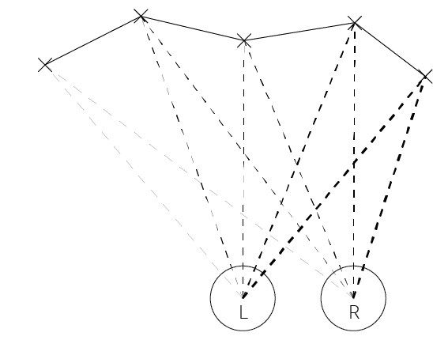
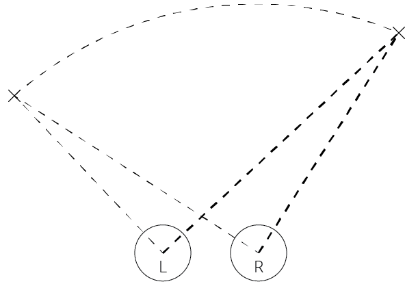
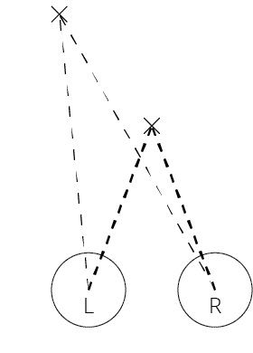
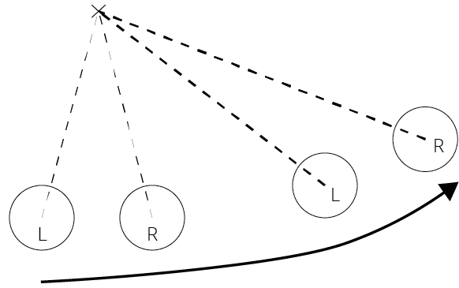
Source images: Bryn Farnsworth, “Eye Movements Explained: Understanding Saccades, Smooth Pursuits, and Fixations,” iMotions, published Jan. 8, 2019; last edited Apr. 21, 2026; accessed June 10, 2026.
Fixations and Saccades
- Fixation - relative gaze stability for information uptake
- Saccade - rapid shift to a new location
- Scanpath - ordered sequence of fixations and saccades
- HCI use: compare the scanpath with the task’s expected information sequence
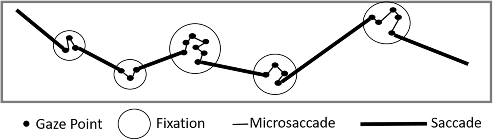
Source: Huang, Doebler, and Mertins, “Short-time AOIs-based representative scanpath identification and scanpath aggregation,” Behavior Research Methods 56 (2024), Fig. 1, p. 6053, doi:10.3758/s13428-023-02332-w.
Pursuit, Stabilization, Vergence
- Smooth pursuit - tracking a moving target
- Stabilizing movements - keeping gaze stable during head or scene motion
- Vergence - aligning both eyes for depth
- These matter in mobile, vehicle, AR/VR, and physical work studies
Source: Land and Tatler, Looking and Acting: Vision and Eye Movements in Natural Behaviour, Oxford University Press, 2009, Ch. 2.
Bottom-Up and Top-Down
- Bottom-up - attention is pulled by visual features
- Top-down - attention is guided by goals and expectations
- Salient features can help alerts stand out
- Task goals guide where people look for needed information
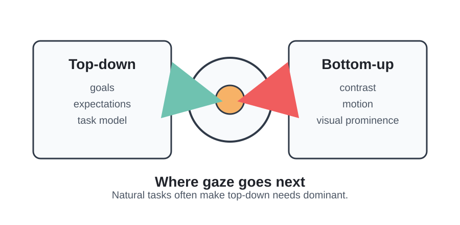
Source: Land and Tatler, Looking and Acting: Vision and Eye Movements in Natural Behaviour, Oxford University Press, 2009, Ch. 3.
Attention: Bottom-Up
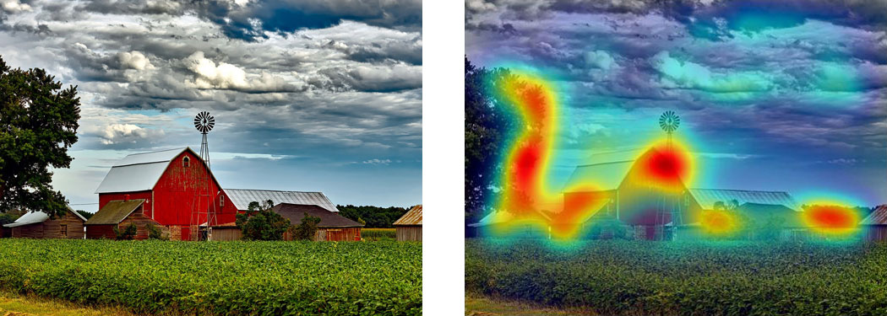
Attention: Top Down
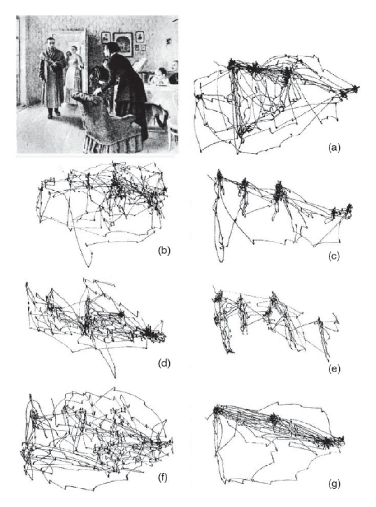
Source: Land and Tatler, Looking and Acting: Vision and Eye Movements in Natural Behaviour, Oxford University Press, 2009, Fig. 3.10, p. 43; adapted from Yarbus, Eye Movements and Vision, Fig. 109.
Section 2.2: Eye Tracking
- How eye trackers work
- Area of Interest
- Visualizing gaze
- Gaze phenomena and interpretation patterns
How Eye Trackers Work
- Capture an image of the eye
- Detect the pupil and/or corneal reflection
- Estimate gaze direction
- Calibrate using known points
- Map gaze to a screen, scene, or virtual environment
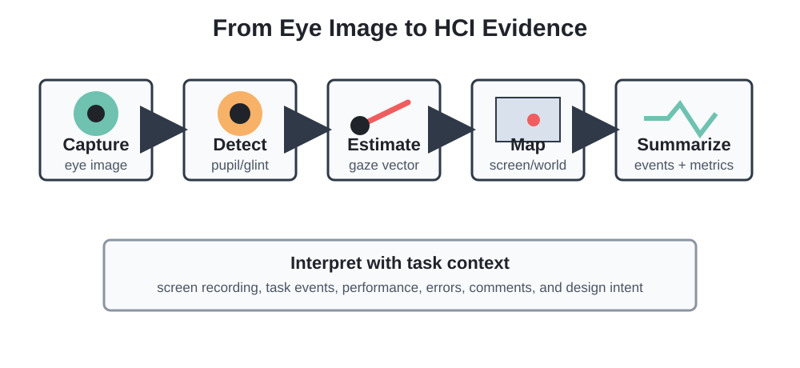
Area of Interest
- AOI - Area of Interest
- AOIs define task-relevant regions for analysis
- Static AOIs: buttons, charts, panels, labels
- Dynamic AOIs: tools, vehicles, people, moving targets
- Good AOIs come from the task question
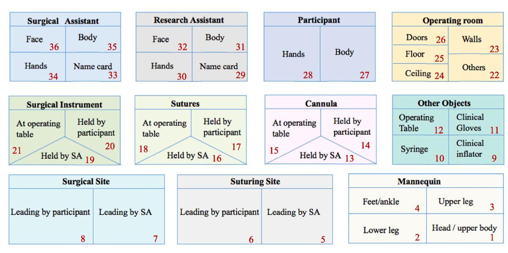
Source: Li et al., “Using Eye Tracking to Examine Expert-Novice Differences During Simulated Surgical Training,” Computers in Human Behavior 144 (2023), Fig. 4, PDF p. 5, doi:10.1016/j.chb.2023.107720.
Visualizing Gaze
- Saliency or heat map - aggregate spatial concentration
- Scanpath - ordered fixation sequence
- AOI network - transitions between regions
- AOI timeline or trace - where gaze went over time
- Choose the visualization for the question
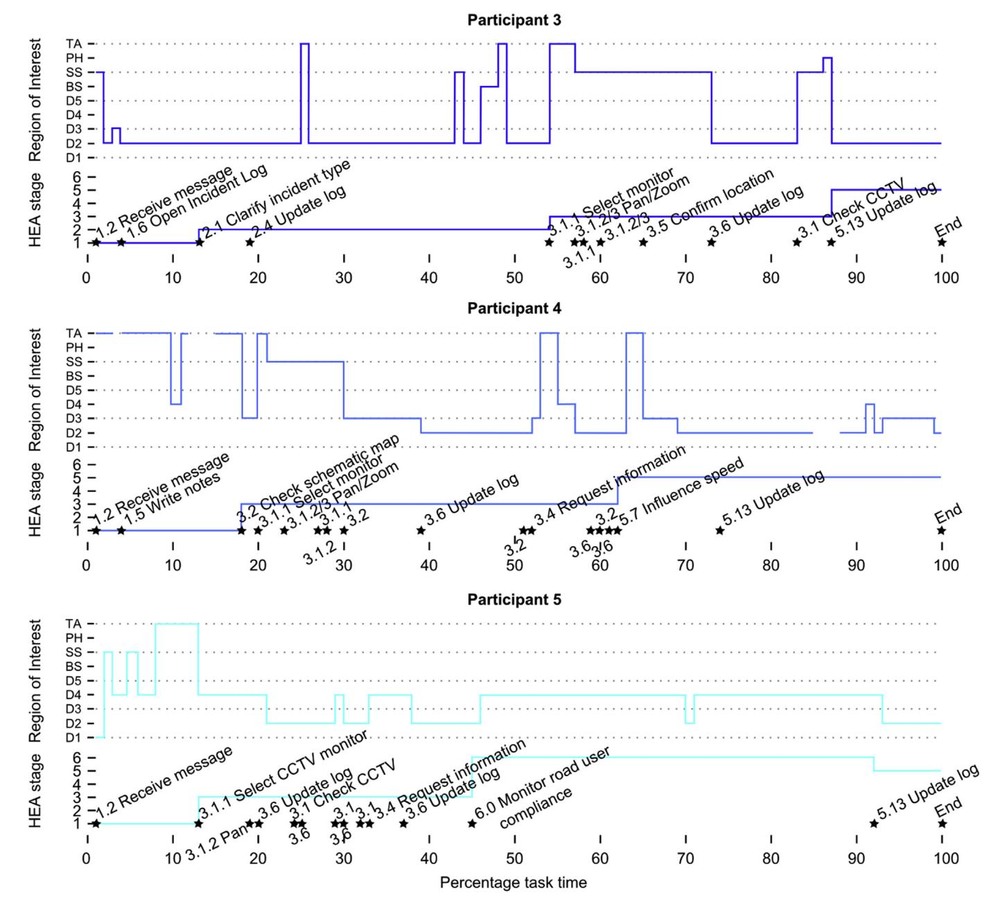
Source: Starke et al., “Workflows and Individual Differences During Visually Guided Routine Tasks in a Road Traffic Management Control Room,” Applied Ergonomics 61 (2017), Fig. 4, p. 84, doi:10.1016/j.apergo.2017.01.006.
Visual Routines
- Task-directed pattern of looking and attending
- Used to gather visual information for a goal
- Can include locating, comparing, monitoring, guiding, and checking
- Interface layout can support or disrupt the routine
Source: Land and Tatler, Looking and Acting: Vision and Eye Movements in Natural Behaviour, Oxford University Press, 2009.
Comparison
- Many tasks require comparing two or more information sources
- Examples: current value vs. target, option A vs. option B, expected vs. observed
- Gaze may alternate between comparison regions
- Extra revisits can suggest uncertainty, memory load, or poor grouping
Visual Search
- Context-guided search - look where the object is expected to be
- Feature-guided search - look for a known visual feature
- Search is easier when layout and visual coding match expectations
- Poor layout turns routine search into exploration
Situation Awareness Scan
- Situation awareness requires scanning critical information sources
- A scan may include current state, trend, alerts, controls, and feedback
- Missed regions can indicate risk or a task-design mismatch
- Overly narrow scanning can miss changes outside the current focus
Gaze Phenomena
- Expertise
- Quiet eye
- Attention tunneling
- Gaze cueing
- Fatigue effects
- Gaze bias, comparison, and confidence
Expertise
- Experts often sample task-relevant information more efficiently
- Novices may show broader search and more revisits
- Visual efficiency - less unnecessary looking
- Information reduction - focusing on cues that matter for the task
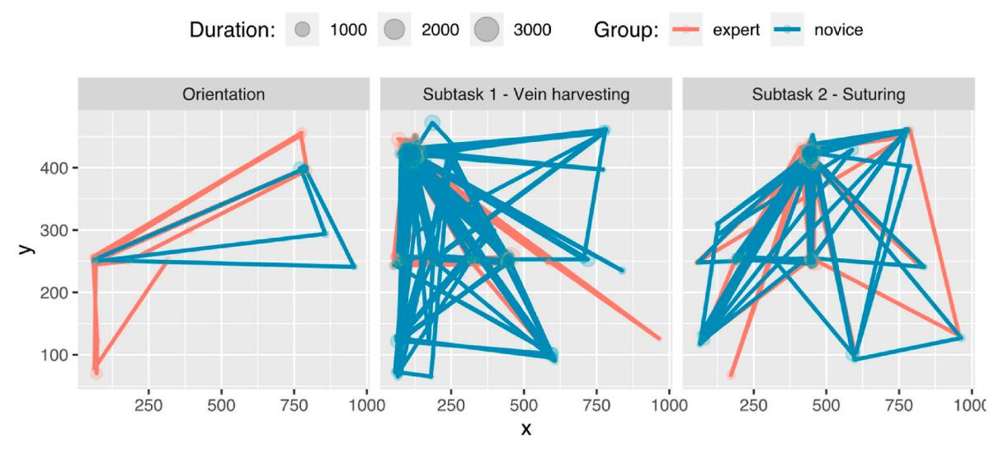
Source: Li et al., “Using Eye Tracking to Examine Expert-Novice Differences During Simulated Surgical Training,” Computers in Human Behavior 144 (2023), Fig. 10, PDF p. 10, doi:10.1016/j.chb.2023.107720.
Quiet Eye
- Final fixation before a skilled action
- Often discussed in sports and skilled motor performance
- Useful idea for timing: where does the performer look before acting?
- HCI analog: gaze to key feedback or control state before committing
Attention Tunneling
- Attention becomes too narrow
- Important peripheral or secondary information is missed
- More likely under stress, workload, time pressure, or alarms
- Relevant to driving, aviation, healthcare, and industrial displays
Gaze Cueing
- People use others’ gaze direction as an attention cue
- Gaze can guide joint attention in teams
- Useful in training, collaboration, telepresence, and supervision
- Also raises privacy and monitoring concerns
Fatigue Effects
- Fatigue can change vigilance and scan consistency
- Blink behavior, fixation duration, and missed events may shift
- No single gaze measure proves fatigue
- Interpret fatigue with performance, timing, and task context
Gaze Bias, Comparison, Confidence
- People may look longer at options they later choose
- Repeated comparison can reflect uncertainty or careful checking
- Faster, cleaner comparison patterns may indicate confidence
- These patterns require task and outcome data to interpret
Section 2.3: Eye-tracking Case Studies
- Road traffic control room
- AOI timelines
- Novice and experienced driver gaze
- VR driving simulation
Evaluation of a Traffic Control Room
- Domain: live road traffic management control room.
- Human role: monitor multiple displays and respond to incidents.
- HCI issue: operators may use available visual information differently.
- Measurement idea: mobile eye tracking captures workflow in the field.
- Figure focus: the workstation layout and Participant 1’s visual sampling.
Control Room Layout

Source: Starke et al., “Workflows and Individual Differences During Visually Guided Routine Tasks in a Road Traffic Management Control Room,” Applied Ergonomics 61 (2017), Fig. 1, p. 81, doi:10.1016/j.apergo.2017.01.006.
AOI Transition Graph

Source: Starke et al., “Workflows and Individual Differences During Visually Guided Routine Tasks in a Road Traffic Management Control Room,” Applied Ergonomics 61 (2017), Fig. 6, p. 86, doi:10.1016/j.apergo.2017.01.006.
AOI Transition Timeline
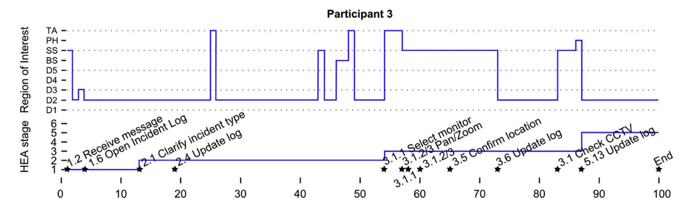
Source: Starke et al., “Workflows and Individual Differences During Visually Guided Routine Tasks in a Road Traffic Management Control Room,” Applied Ergonomics 61 (2017), Fig. 4, p. 84, doi:10.1016/j.apergo.2017.01.006.
VR Driving Simulator Gaze Analysis
- Domain: simulated intersection driving in a VR driving simulator.
- Human role: monitor the road, cabin displays, mirrors, signals, and hazards.
- HCI issue: novice drivers may use narrower visual search than experienced drivers.
- Measurement idea: compare dwell time, fixation duration, fixation count, stationary gaze entropy, and gaze transition entropy.
- Finding: experienced drivers showed broader gaze distribution and higher transition entropy.
- Design use: identify driver groups that may need training, feedback, or safety support.
VR Driving Simulator
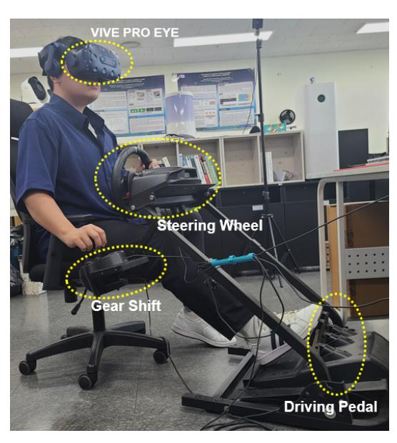
Source: Chung et al., “The Static and Dynamic Analyses of Drivers’ Gaze Movement Using VR Driving Simulator,” Applied Sciences 12(5), 2362 (2022), Fig. 1, PDF p. 5, doi:10.3390/app12052362.
Driving Scenario
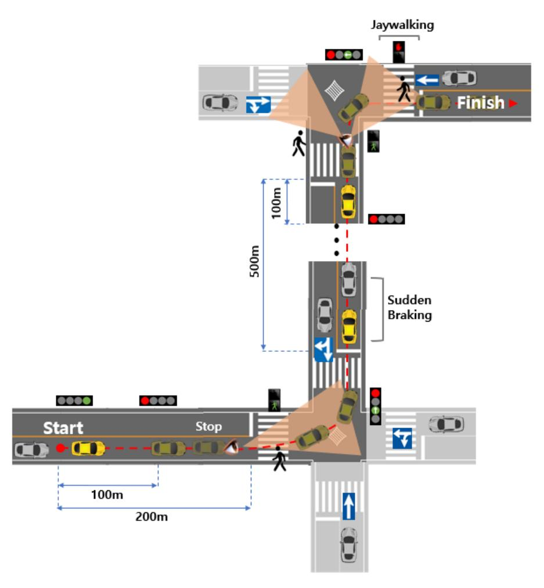
Source: Chung et al., “The Static and Dynamic Analyses of Drivers’ Gaze Movement Using VR Driving Simulator,” Applied Sciences 12(5), 2362 (2022), Fig. 3, PDF p. 6, doi:10.3390/app12052362.
Car Cabin AOIs
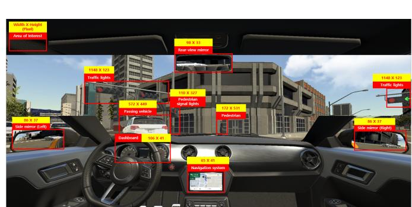
Source: Chung et al., “The Static and Dynamic Analyses of Drivers’ Gaze Movement Using VR Driving Simulator,” Applied Sciences 12(5), 2362 (2022), Fig. 7a, PDF p. 10, doi:10.3390/app12052362.
Salience Map
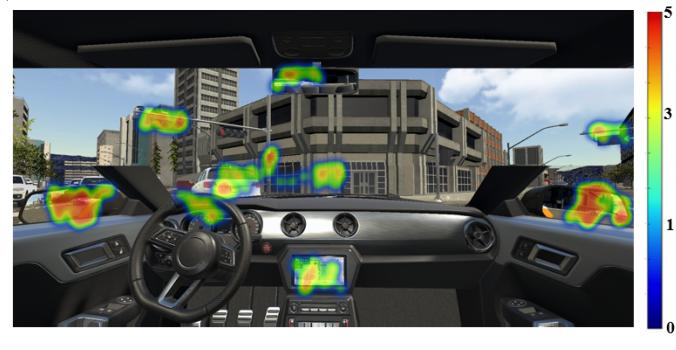
Source: Chung et al., “The Static and Dynamic Analyses of Drivers’ Gaze Movement Using VR Driving Simulator,” Applied Sciences 12(5), 2362 (2022), Fig. 7c, PDF p. 10, doi:10.3390/app12052362.
Fixations by AOI
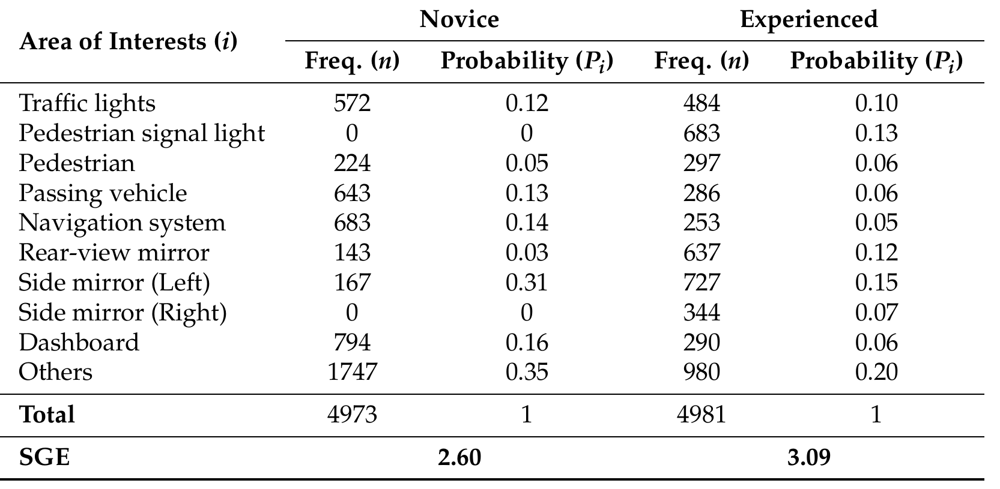
Source: Chung et al., “The Static and Dynamic Analyses of Drivers’ Gaze Movement Using VR Driving Simulator,” Applied Sciences 12(5), 2362 (2022), Table 3, PDF p. 11, doi:10.3390/app12052362.
Fixation Duration by AOI
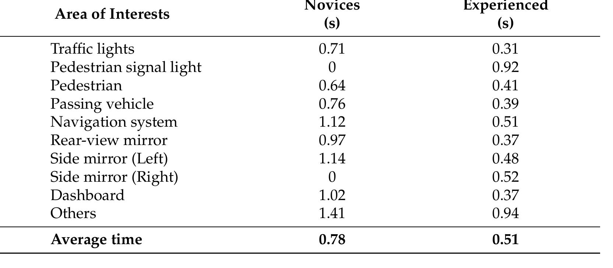
Source: Chung et al., “The Static and Dynamic Analyses of Drivers’ Gaze Movement Using VR Driving Simulator,” Applied Sciences 12(5), 2362 (2022), Table 2, PDF p. 9, doi:10.3390/app12052362.
AOI Transitions
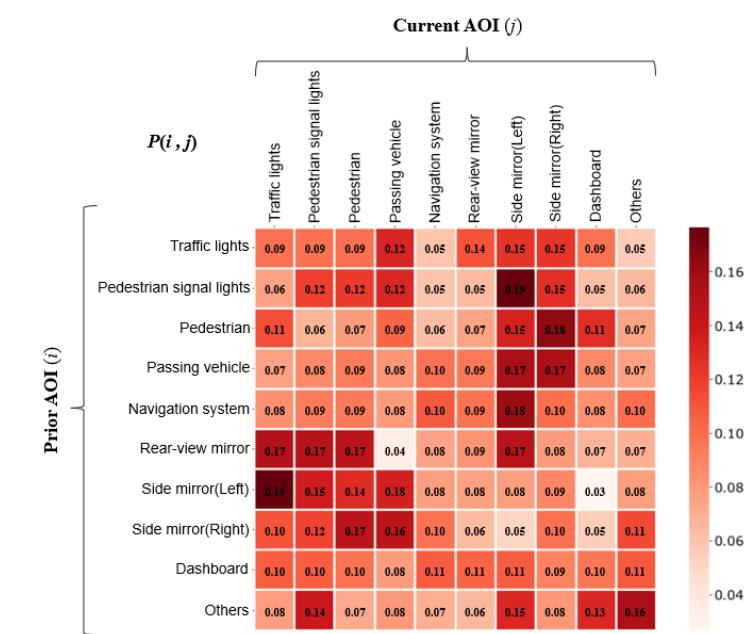
Source: Chung et al., “The Static and Dynamic Analyses of Drivers’ Gaze Movement Using VR Driving Simulator,” Applied Sciences 12(5), 2362 (2022), Fig. 8b, PDF p. 11, doi:10.3390/app12052362.